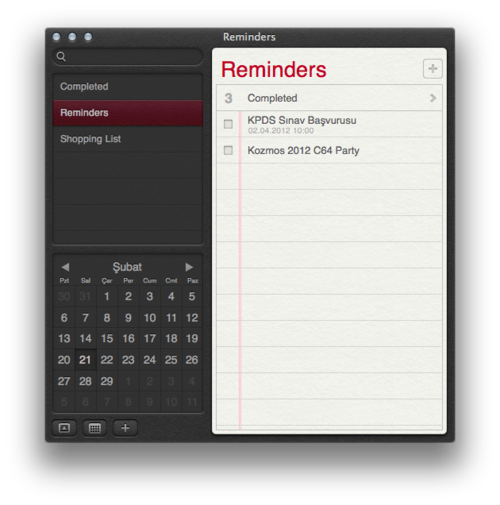
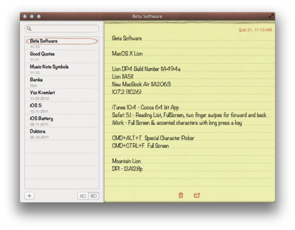
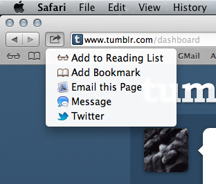
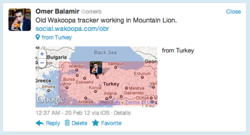

Apple 2012 yılı yaz sonunda çıkacak olan işletim sistemi OS X Mountain Lion’ın ilk Geliştirici Sürümünü programcıların kullanımına açtı. Bu sürümü bilgisayarıma kurup kurmamakta önce kararsız olmama karşın, gerçekten kullanışlı özelliklerini okudukça ve gayet stabil olduğunu öğrenince kurmaya karar verdim.
Yükledikten sonra ilk işim iCloud bağlantısını sağlamak oldu. Çünkü artık OS X tamamen iCloud ile entegre bir hale gelmiş. Kişiler, Hatırlatıcılar, E-Posta, Notlar vb. pek çok özellik iCloud üzerinden eşitleniyor. Hayatımızı büyük ölçüde kolaylaştıran bu özellik kimi zaman karmaşayı da beraberinde getiriyor. Özellikle kurulum aşamasında Apple ID’leri arasındaki farklılık sebebi ile biraz sorun yaşadım. Eski MobileMe adresleri yeni iCloud sistemi ile tam entegrasyon sağlayamıyor. Ancak Notes uygulamasını iCloud ile eşitlemek isterseniz bir MobileMe adresinizin olması da şart. Yani 2 tane iCloud hesabınız (Primary ve Secondary) Apple tek bir iCloud hesabında tüm eşitlemeyi gerçekleştirebilecek bir sistem oluşturmazsa iCloud sisteminde kullanıcılar biraz karışıklık yaşayacak gibi.
iCloud bağlantısı sağlandıktan sonra tüm iOS cihazlarınız ile bilgisayarınızdaki uygulamalar anında eşitleniyor. iPhone’unuza eklediğiniz bir kişi, evdeki bilgisarınızdaki Contacts uygulamasında görülebiliyor.
iOS 5 ile iPhone ve iPad’e gelen Reminders uygulaması Mountain Lion ile bilgisayarınızdan yapacağınız değişikliklerle daha etkili bir yapılacaklar uygulaması haine gelmiş.

Notes iPhone’da kullandıkça alıştığım ve vazgeçemediğim bir uygulama. iPad’de de severek kullanıyorum. Şimdi OS X’e eklenmiş ve iCloud senkronizasyonu ile tüm cihazlar eşitleniyor. Denemelerimde gördüğüm kadarıyla her zaman başarılı bir senkronizasyon mümkün olmadı. OS X’deki Notes uygulamasına resimler eklenti olarak yapıştırılabiliyor. iOS cihazlar henüz bu özelliği desteklemiyor tabiki.

Safari’deki en önemli yenilik Share (paylaşım) düğmesi ile adres çubuğunun aramalar için tek bir çubuk haline (omnibar) gelmesi olmuş. Bence adres çubuğu ile arama çubuğunun ayrı olması daha iyiydi. Share düğmesi Preview uygulamasında değişerek fotoğrafları Flickr’da paylaşabilir hale getirebiliyor.

Safari ile twitter’da yaptığım paylaşım iOS’dan gönderilmiş gibi gözükmesi bu program parçasının iOS’dan doğrudan aktarıldığını gösteriyor.

Game Center şu an için çalışabilir bir uygulama değil. Yalnız dikkatimi çeken Apple OS X’deki Game Center için yeni bir kimlik yaratmamı istedi. Eğer iOS ile eşitlemeyecekse burada da iCloud’da olduğu gibi çift kimlik sorunları yaşanabilir.
Genel haliyle oldukça stabil çalışan Mountain Lion’da en önemli çökmeleri System Preferences’da özellikle iCloud ayarlarını yaparken yaşadım.